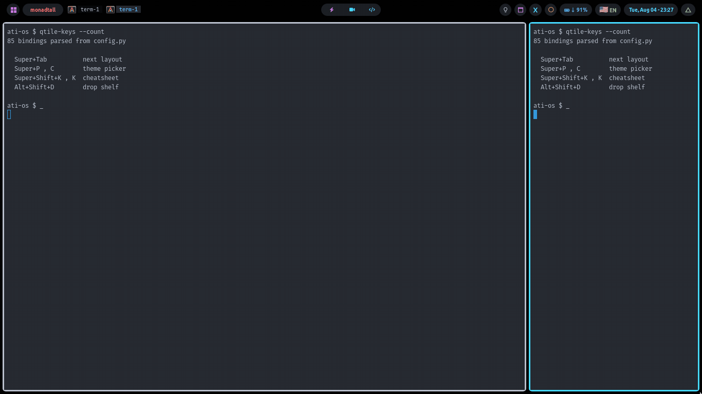

Start here
ATI-OS is a ready-made Linux desktop: Arch and qtile, packaged. Install it once and you get the computer in the picture below, with 22 colour schemes and about fifty tools already set up.

If you are stuck, start here.
Which install do I want?
One question: do you already have Arch Linux on this computer?
- No. The computer is empty, or I want to start fresh Use a USB stick. It installs Linux and this desktop together. About 20 minutes. It erases the disk you point it at.
- Yes. Arch is already installed Run one command. It adds this desktop to what you have and erases nothing. One to two hours, almost all of it waiting.
Both end at the same desktop.
After it installs, you get a black screen
This is normal. There is no login box, and the desktop does not start itself.
-
Type your username, press Enter. Type your password, press Enter.
The password stays invisible as you type. Not even dots. Keep going.
-
Type
letsgoand press Enter.The screen flickers. The desktop appears.
If that says letsgo: command not found, type startx instead.
More on this.
Words used on this site
| Word | Meaning |
|---|---|
| Arch Linux | The version of Linux this runs on. It only works on Arch. |
| tiling window manager | Windows arrange themselves side by side. You do not drag or resize them with the mouse. |
| qtile | The particular tiling window manager used here. |
| the bar | The strip at the edge of the screen with the clock and battery. |
| theme | A set of colours. Changing it recolours everything at once, down to your folder icons. |
| terminal | A window where you type commands instead of clicking. |
| TTY | A plain text screen with no mouse. What you see before the desktop starts. |
What has not been tested
This is one person's desktop, shared. Some of it is proven on real machines. Some is not.
Nobody has ever run this on:
- AMD or NVIDIA graphics. Only Intel has been seen working. The code handles all three, but two of them are untested.
- A 4K screen. The sizing maths is correct. Nobody has looked at the result.
- Some laptop battery indicators, on models that name them unusually.
The USB installer also needs a computer that starts in UEFI mode. Almost anything built after 2012 does. Older machines are refused outright rather than half-installed.
The built-in self-check can lie on a fresh machine. When
validate.sh cannot run a check, it marks it "skipped" and still reports
success. On a machine where the install went badly it skips everything and passes.
Trust the installer's own count instead: 46 ok / 0 failed.
Once it is running
- Keyboard shortcutsThe six you need on day one, then the rest.
- Changing the coloursTwo keys. 22 schemes.
- The bar and the popupsWhat everything does when you click it.
- The tools you getA shelf for files, an update button, phone mirroring, dictation.
- TroubleshootingReal problems, most likely first.
- Where everything livesWhich file to edit to change something.
- How it worksThe design reasoning, kept out of the way.
Based on Distrotube's qtile configuration, extended with the author's own customisation and workflow.